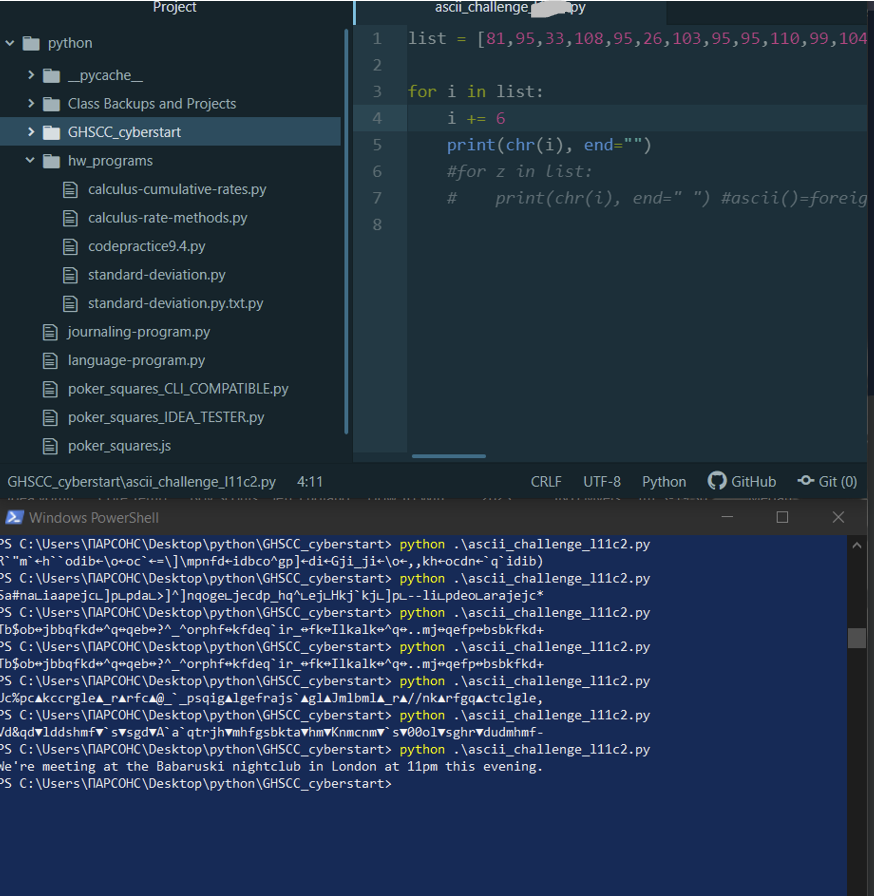

February 15th: A strong start to the new year, and leaps in cybersecurity
Big server projects, winning SANS GSEC, and intense learning and skill development. Through hard work, I've made it this far.
Working cybersecurity for the government? 5 certifications within a year? Through hard work, I'll get it done.
It's been a busy 2-3 months! Lots of determined learning, improving, and honing of my skills while chasing a couple new opportunities.
Highlighted Learning Projects of the Year (so far)
- Created an multi-layered defense for a "Data Backup and Hacking Operations Kali Linux SSH Server", accessible from the Internet, finished February 1st
SSH
- Configured a non-standard SSH port, for resiliency against port scanning
- Only able to logon as a specific user, and NOT with a password (i.e., can't logon as admin, root, anonymous, etc., and can't login with a password [see next defense layer])
- Required to use 521-bit encrypted ECDSA-private key/identity file, with the password to decrypt it
- Applied principle of least privilege to the ssh account with group and user permissions, and disabled it from using 'su' (switching user accounts) with PAM (pluggable authentication modules) (tutorial link)
Storage Administration
- Added a 2TB drive to my server
- Used parted to change file table from MFT to GPT (here's a great tutorial on this))
- Used parted to make new disk partition, and added an NTFS file system to that partition
- Added an entry to /etc/fstab so it would automatically mount at boot. (Tutorials and Information LINK-ONE, LINK-TWO)
- To be troubleshooted: Execute permissions not allowed on (despite 'exec' flag in fstab)
- Created a Corporate Virtual Client-Server Linux Network, from scratch (that's a mouthful)
- Installed AlmaLinux ISO, and installed the OS on several VMWare virtual computers. Finished earlier in the year.
- Network connectivity and troubleshooting with nmcli (no tools like netstat, nc, or even ifconfig [I used skinny, GUI-less 8GB ISO image to limit space])
- Installing and hardening SSH (disabling root, having an ssh user, nonstandard port, limited simultaneous session-count)
- Created several user accounts, groups, and folders to simulate department users/resources on a corporate network. Applied permissions and ACLs (access control lists, seen with getfacl and set with setfacl) to apply principle of least privilege. Made an Admin account that alone could use 'sudo', but still needed to use password authentication for privileged actions.
- Installed and hardened programs like Postfix mail and Apache Web Server (even using TLS encryption and firewalls to force port 443 and HTTPS connections only)
- Set password policies with PAM and /etc/login.defs because I like learning :) (note, login.defs is usually overwritten by PAM, but provides a backup policy with administration directly over the /etc/shadow file)
- Learned Git for knowledge and periodically backing up my notes with a cloud version control system, rather than just dumping them into a cloud storage service every once and awhil
- Learned how to do file carving in a digital forensics class
- Learned how to do network packet dissection by hand
- Started a plan to get four certifications for the price of one (I spared you the details but this is the high-level plan):
- Do Google IT Support Professional Certificate Course (prepares me for CompTIA A+ and gives a certification)
- Do CompTIA A+, and earn the IT support Profession and A+ Dual Credential
- Do Google Cybersecurity Professional Certificate Course (prepares me for CompTIA Security+ and gives a certification)
- Do CompTIA Security+, and
- Oh yeah, I also won access to SANS401: Network, Endpoint, and Cloud, which awards the DoD/U.S. Government Agency recognized GIAC GSEC, due to my awesome work in the Michigan Governor's High School Cyber Challenge on Cyberstart America (I already have the GFACT, so they gave me another SANS course)
Opportunities in Progress
- DoD Cybersecurity Scholarship, will be getting a response in a few months
- SANS GSEC, going through the course and getting that credential
- NCL Webinars, to give me more training
- Mi pona e sona toki pona :)
 Thursday, February 15th, 23:14 - C'est joli, n'est-ce pas? Tu descubras el nuevo mundo cuando abres los ojos.
Thursday, February 15th, 23:14 - C'est joli, n'est-ce pas? Tu descubras el nuevo mundo cuando abres los ojos.
October 31st & November 1st, 2023: The end of an EXTRAORDINARY Cybersecurity Awareness Month
Happy Halloween, y Feliz Día de los Muertos :)
Ah, where to start? Summits, CTFs, career development, and and immense amount of learning and skill
development...(don't worry, I'll keep it structured and semi-brief)
Summits
- Davenport University's Cybersecurity Celebration (and a career fair earlier in the day) - October 12th
- I learned that the one set path in Cybersecurity is that there is no path (but that actual
work
experience
is important, and will "unlock" my other skills and experience in a sense). This was super enlightening
as I
learned about the different careers in Cybersecurity, and heard personal stories from professionals in
the
field.
- The Novi, Michigan HS Cyber Summit- October 19th
- Shaking hands with people from all levels of the industry, state, federal, and private, picking locks
with
a guy from GrrCon, learning that imposter syndrome affects even the very best, and learning from a
diverse
range of knowledgable speakers (re-affirming that nobody
questions the guy with the clipboard :) )
CTFs
- The National Cyber League's Fall 2023 Individual Game
- Putting my skills to the test in OSINT, Cryptography, Password Cracking, Log Analysis, Network Traffic
Analysis, Forensics, Scanning & Reconnaissance, and Enumeration and Exploitation
- My highlights:
- Phenomenal performance in Scanning & Reconnaissance, using NMAP, poking with Telnet, Port Knocking
(something new and interesting that I learned), listening with Tcpdump, or making sense of a large log
file with a capture

- Great work in OSINT, doing anything from finding super old TLS certificates, to finding the Serial
ID of
a singular tree in the middle of New York City based off of nothing but an image
- Cipher Tech's Reverse Engineering, Digital Forensics, and Binary Reversal CTF - (ONE OF MY BEST
PERFORMANCES
IN CYBERSECURITY)
- This CTF provided a 32 and 64 bit binary of a "suspicious PC performance program", and the questions
beforehand included things like "what is the exact OS and version that made this binary? How long does
it
stay dormant [there was a C sleep function of 2 days and 9 hours that I bypassed with something called
"Dependency Injection", and then again later by manipulating memory addresses with the GNU Debugger]?
What
is the hostname [NOT IP ADDRESS, which would be easy with Wireshark] of the remote computer, and what
data
is being exfiltrated?". With only 5 questions, 14 days to complete the CTF, and NO idea where to even
start,
I was a little in over my head, BUT I was determined to use this as a learning experience to advance my
super-limited knowledge in Digital Forensics and RE.
- Sure enough, this proved to be a SPECTACULAR learning experience:
- I spent two days learning Assembly, and going through NCL's "101 on Code Execution" to get some
foundational knowledge on Reverse Engineering before I even touched the CTF challenges. link1
link2
- Then, my third day, I spent a bunch of time, critical thinking brainpower, and coffee on solving
EVERY
challenge in
the CTF in a blaze of glory. I made leaps and bounds in Reverse Engineering, and through hours of
learning
methods to bypass the sleep function in the provided binary, combing through the binary and countless
memory addresses with GDB, using wireshark and miscellaneous forensics tools to find specific
information.
- Some screenshots of what I did:
- (From top to bottom: Using GDB to find out how long the binary lays dormant for. Then, Dependency
Injection to bypass the binary's sleep function, and then capturing the subsequent connect command
with wireshark. Next, displaying the GCC comment displaying what OS and version was used to compile
the binary (and verifying with ChatGPT to provide related information that made me sure of the answer
[the CTF records accuracy]). Next, using GDB to find and verify the hostname of the computer that the
program was trying to connect to. Finally, I used Ghidra [for the first time, made easier due to my
studying of assembly] to discover what data was being exfiltrated [this took a long time and combing
through practically EVERY line of Assembly, multiple-times-over, and I kind of guessed that
"keystrokes" were being sent because of the usage of /dev/input {which refers to keyboards and
computer input devices}], and got the correct answer)

What's next?
- Doubling my college load with two new Cyber Defense classes
- Learning Arabic (I spent yesterday night learning, and got some incredible information) and spending
some
more time getting languages as things stay a LITTLE calmer before Christmas.
- Improving work efficacy to balance these new classes.
- Engaging in specialized self-education like I did for Reverse Engineering (because that was such a
phenomenal success), but for other topics in Cybersecurity (networking and creating a [virtual] home
network?
Website exploitation? Command injection? TryHackMe rooms? There's loads for me to learn, and I'll learn it
all
:) )
Tuesday, October 31st, 16:51 - November 1st, 15:21 (with
sleep and other activites) - Le future ne sera pas avec douleur, et la vérité est que ce n'est pas bien trop
dur. Laissez le temps fleurir حبيبي
September 26th and 27th, 2023: Blitzing to the Cyberstart Finish Line
These past two days, I decided to hit a mega sprint in these Cyberstart America/GHSCC CTF challenges.
It's amazing what one can do in so little time (a classic example of the deadly mix of Parkinson's Law and
Extreme Determination) :)
After thinking I had hit a brick wall, I solved just enough challenges in what was the current level to move on
to the next level, and to my surprise, just kept solving challenge after challenge (and, being level 11 and 12
out of
13, the challenges were MUCH more difficult, realistic, and multifaceted than any of the previous ones [and I
even solved some of them in unconventional directions than what the CTF was suggesting {when it still provided
very light hints/suggestions as to where to look in the beginner-level field manual. The last half of the
challenges in
level 11, and all of them in level 12, did not contain ANY sort of hinting whatsoever}]), and then unlocked the
next level, where I did the same thing until I was finally stopped in my cyber-slaughter of
challenges (which was okay, because it was late at night on September 27th, the final day of the competition).
Here is a highlight reel of what I did:
- Creating several Buffer Overflows
- Fixing broken header hexes
- Steganography
- GNU Debugging (Proud Moment)
- Cookie Manipulation (doing anything from SQL Injections with a cookie to bruteforcing session cookies with
scripting)
- Log analysis
- Fixing C and Assembly Code (and using quick and effective research skills)
- Scripting (Lots and Lots of Scripting, and creating bash or python programs to hack both programs and
websites, unencrypt messages, and other brute forcing)
Debugging a program and analyzing memory spaces to find the password:
Performing an SQL Injection with a cookie:
Python Program, supplied with a list of characters, that takes each number in the list and reverses the process of
encoding a secret message in ASCII Code, and then subtracting every code by a certain number

^Notice the poker squares programs, which are the same ones I modified and used in this website! (In addition
to the other scripts, which I used to make my homework back in high school easier.)
Quick Bash Script that takes a large number of encrypted passwords and pipes them into a program to find the right
one
After jumping up to 97,500 points, do you think I'm in the top 10, and off to the final competition at the Cyber
Summit on October 18th? :)
Thursday & Friday, September 28th 16:36-16:57 (content),
Sept. 29th
15:31-16:38
(pictures) - J'aime ce boulot là :)
September 1st and 2nd, 2023: The [Wonderful] Start to the Season of Rigor...
SOME of what is and what will be going on in my computery-endeavors:
- Signed up for the Fall 2023 NCL CTF
- Joined OSINT-FR, and the DLI French Course
- Hitting "high dollar" challenges in Cyberstart, racking up points for the final stretch of the GHSCC season
Recent Governor's High School Cyber Challenge / Cyberstart Highlights:
^Results of my following bruteforce script (with explanations):
----------------------------------------
#!/bin/bash
# I chose to use bash after I had some weird trouble with python
# Prompt: The program "prog-l0bar" takes an argument that is a four digit secret code. Crack it with a script.
for i in {0000..9999}
do
./prog-l0bar $i #pipes output and/or variable without "|"
done
# that's it!!
----------------------------------------
This was a super simple but cheeky-feeling way to finish a challenge :)
Some other things I've done to boost up to 82500 points (Rising 6000 or so points in just today, clearing the
entirety of HQ level 9 [no easy feat!], now beating 8th place in the final 2018 Girls Go Cyberstart competition [
though I don't know how that translates to the GHSCC], and being 72.98% done [181/248 total challenges] with
Cyberstart
America) include Steganography with binwalk, more reverse engineering, and two particularly fun challenges that
required some fun maneuvering:
^Here, I had to ssh into a foreign system and find a nondescript file that was created November 22nd, 2015 at
20:00 (with no other information). After multiple tries and research, I found that I could use the deadly "find |
grep" combo once again :)
^The next challenge (the one I'm most proud of, and have probably cheesed/circumvented the hardest) required
me to
ssh into a remote system (remember, this gets rid of most fancy tools on your home system), and find an image file
in a ginormous mix of junk files (with all of the files ends stripped).
This was no beginner level challenge, and you couldn't just cheesily use "strings" or "grep" to find some string
that searched the file system for 'flag:' in one of the files, as the flag is in the actual rendered image. So,
instead, I cheesily used "file -i *" to find the odd one out in the folder with all the junk files in it. That was
part one of the challenge...
^Part two of the challenge required me actually rendering the image file to get the flag. But, because I was ssh'd
into a limited remote system, it wasn't as easy as opening it with xdg-open, right clicking on it, or using an
image viewer. So, I had to go throught he process of learning how to use the "scp" command to go from my home
system, input the exact location of the file I just found with "file -i *" on the remote system, and take it back
to my home system, where I could then render it with xdg-open. Voilà, the flag is the serial number (SN:0207F9) :)
OSINT-FR and DLI:
OSINT-FR Home Page Link
I joined a global community of people curious about OSINT, both beginners and (primarily) super-whiz professionals
and cyber ninjas, who do everything from develop powerful tools, share resources (online courses, neat articles,
etc), tackle issues (e.g. disinformation, child abuse), and more! Au moins, ils parlent Français, et je peux les
utiliser pour l'améliorer (particulierement avec la vocabulaire de Cybersécurité, et le web).
I also found some free resources online due to some OSINT of my own :)
Those being free "FSI" (Foreign Service Institute) and "DLI" (Defense Language Institute) resources online for
French, Spanish, and a myriad of other languages. I researched and judged the DLI course to suit my needs more,
and will be partaking in that for the foreseeable future (it's designed to be 15-20 work weeks of 6 hour class
days on the language).
Fall 2023 NCL CTF:
NCL Home Page Link
Having participated in the Spring and Fall 2021 Individual Games, and the Fall 2021 Team Game, I can tell you that
NCL is no joke. It has beginner to ultra-hard challenges in OSINT, Log Analysis, Network Traffic Analysis,
Cryptography, Scanning, Forensics, Password Cracking, Enumeration and Exploitation, and Web Application Security
(website hacking). This is going to be quite the competition, with me knowing much, much, MUCH more than I did
than the last time I participated in this CTF. It's going to be fun :)
Saturday, 21:30 - J
June 29th, 2023: The GHSCC CTF, Cyberstart America, Bruteforce Hacking, and fun :)
Over the last few days (in addition to lots and lots of Eagle Rank work), I've been brushing up on my cyber
skills in the "Michigan Governor's High School Cyber
Challenge" (GHSCC [run on the Cyberstart America platform]).
I had a lot of extra points from previous Cyberstart America seasons (where I scored high enough to gain access
to the NCSF CTF, then won access to the SEC275: Foundations course from the SANS Institute [then passing the
final exam, becoming certified]), but through the past couple of days I've jumped from 30,000 or so points, to
over 52,000 points (each challenge at the levels I'm currently playing at are 600-700 points).
In the GHSCC, the top 10 teams (I'm flying solo :) ) in the Cyberstart Game, when the season ends, will win
access to the 2023 SANS Core NetWars Cyber Range//CTF (which I have a keen eye upon winning [not really for any
good reason, except it's {hopefully} more intense than anything I've done in a cyber competition before]). I
looked up previous high scores from Cyberstart America to see how many points I needed to earn to be
competitive, and found this photo:

From doing socket programming with Python, encoding and decoding, decrypting, website hacking, brute
force password hacking with Hydra (referencing the photo at the top of this post), brute force zipfile cracking
and directory scanning with Python scripts, to SQL and command injection, I've been putting in the work.
Thursday, 20:42 - J'aime utiliser les ordinateurs comme ça
pour
m'amuser.
21:40 - I just found the final list for a series
of Cyberstart ranking lists I found earlier, and this is suddenly terrifying. Top score is 117,700 (approx 170
challenges, give or take a few), and score ten is 75,900 (DANG). I have a lot more work ahead of me ;-; (but, as
always, "we do not do these things because they are easy; we do them, because they are hard.")
June 22nd, 2023
Finally got around to making my Cybersecurity-blog-esque page on my personal website! This page will show you
what sorts of things I've been up to in the field of Cybersecurity / IT (competing in CTFs, creating projects,
cracking boxes in THM, etc.)
I'll think that I will also include a linked page that has a bunch of tools
and resources you can go to (e.g. Cyberchef, the Boxentriq cipher identifier, and other
things to consolidate your resources and knowledge).
Thursday, 12:56 - Voila, et le profitez!
"Vaut mieux
vivre avec des remords, qu'avec des regrets...c'est ça, le secret."
 Home and Projects
Poker Squares!
Music
Cybersecurity
Cooking
Home and Projects
Poker Squares!
Music
Cybersecurity
Cooking